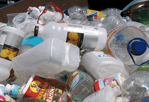

É um dos produtos mais utilizados na sociedade atual. Ao ser descartado por pessoas e empresas, pode passar por um processo de reciclagem que garante seu reaproveitamento na produção do plástico reciclado. O plástico reciclado tem praticamente todas as características do plástico comum.
A reciclagem do plástico é de extrema importância para o meio ambiente. Quando reciclamos o plástico ou compramos plástico reciclado estamos contribuindo com o meio ambiente, pois este material deixa de ir para os aterros sanitários ou para a natureza, poluindo rios, lagos, solo e matas.Nas últimas décadas as indústrias, principalmente de bebidas e alimentos, estão substituindo as embalagens de vidro e latas pelas de plástico PET. Por serem mais resistentes e econômicas, o PET já está presente nas embalagens de sucos, águas, óleos e refrigerantes. Quando começou a ser usado, o PET não era reciclado e seu descarte na natureza provocava muita sujeira e poluição ambiental. Atualmente, a reciclagem de PET é praticada em larga escala por cooperativas e empresas de reciclagem. O processo de reciclagem do PET passa pelas seguintes etapas: 1º) As embalagens PET são lavadas e passam por um processo de prensagem; 2º) Os fardos de PET são triturados, gerando os flocos; 3º) Os flocos passam por um processo de extrusão, gerando os grãos; 4º) Os grãos são transformados em fios de poliéster ou outros produtos plásticos.
Uma das etapas mais importantes no processo de reciclagem de plástico é a separação e coleta seletiva do Plástico. Nas empresas, condomínios e outros locais existem espaços destinados ao descarte de plástico. Esta é uma atitude extremamente positiva e ecologicamente correta.
A reciclagem de plástico gera renda para milhares de pessoas no Brasil que atuam, principalmente, em empresas e cooperativas de catadores e recicladores de materiais reciclados.
Tipos de plásticos recicláveis: